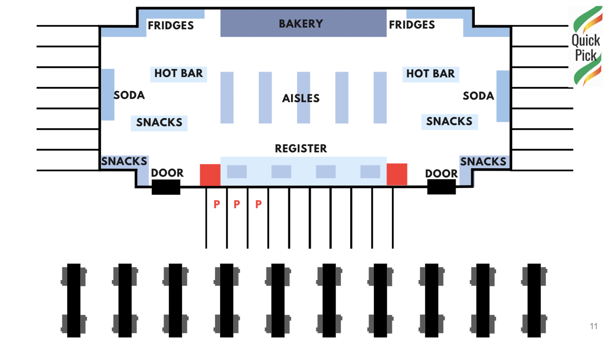
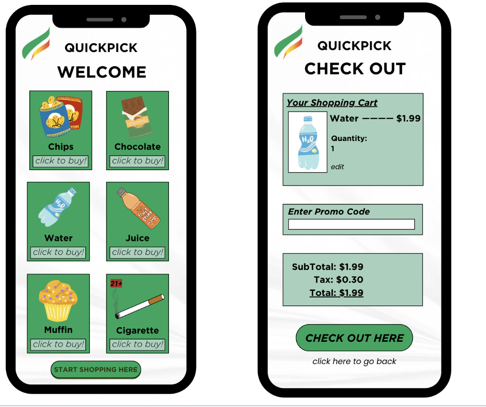

Cornerstone Design: QuickPick
Contributors: Sumana Chilakamarri, Lucia Touma, Mitali Bidkar, Ridha Sohani, Yianni Costarides
Project 1: QuickPickz
Project & Client Introduction
For this project, our team played the role of consultants called in to suggest how a hypothetical conventional retail store should redesign its operations to accommodate this new approach to customer service. In approaching the project, we observed how these curbside/instore pickup systems work at existing stores & researched “retail store design.”
Our hypothetical client is a gas station with a convenience store (c-store) named QuickPick (QP) modeled after chains like QuickTrip and RaceTrac. The typical layout consists of a centralized checkout island sided by aisles of organized items and walled by refrigerators and hot foods. The gas pumps are arranged two in a row, double sided outside. A standard c-store holds 2000-2500 products and brings in a revenue of ~$120,000 a month according to industry standards. Store operations consist of inventory tracking/restocking, manning registers, checking out people filling gas at the register, and custodial activities.
It is imperative to move into the buy online, pickup in store space, also known as BOPIS. Both in-store and curbside pickup offer customer-centric convenience and save time. They also offer an additional revenue stream by promoting customers to increase spending out of convenience with 47% of shoppers buying more products while picking up their orders in store. Inventory tracking also becomes easier, as orders can be tracked through transactions made on the app. BOPIS is faster than in-store shopping, which decreases queue time and checkout time.
Primary Concerns
Shifting market dynamics and industry trends have shown a need for c-stores to stay competitive with quick-service restaurants. For example, QuikTrip recently expanded its menu to include made-to-order sandwiches which raised food sales to over 20% of store revenue, likely taking away market share from traditional quick-service restaurants. Implementing BOPIS would not only align with evolving industry trends but also enhance customer convenience.
Design Decisions
- BOPIS using Curbside & In-store pickup options
- Updated Inventory on App (both client & customer end)
- Labor Management System
- Physical Changes: Parking Spaces & Shelves for pickups
- QuickPick App
Presentation
Project 2: Humor Heals: The Final Act of the Funny Bone Clinic
Project & Client Introduction
Our client was the Orthopedics Clinic in Atlanta: An expansive clinic catering to orthopedic needs. We were provided with detailed background of the clinic, primarily as delineated by the past client. We were additionally provided with a wealth of data to aid in analyzing, identifying, and quantifying the inherent challenges and opportunities with the clinic.